The mark layers translucent triangles in the brand palette — a visual metaphor for Innovation, Teknologi, Kreativitet. Three primary variants cover every surface; a family of alternates exists for special contexts.
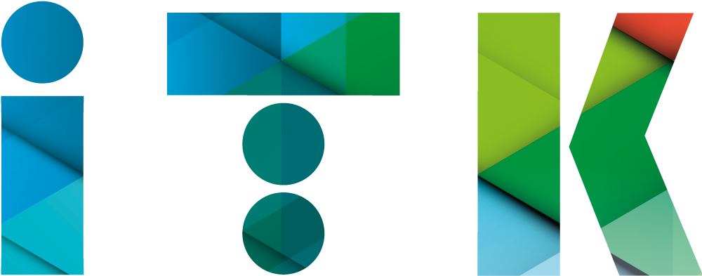
When the unit needs to sign itself explicitly — on product repos, service headers, developer-facing materials — use the ITK Development horizontal lockup. Same three variants as the master mark.
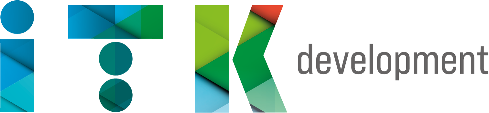
The wordmark sets in a neutral grey sans, vertically centred on the “K”. Do not recreate it — always use the supplied files. Prefer the master “itk” mark wherever context already makes the unit clear.
A family of numbered alt logos explores different triangle arrangements. Use only for campaigns, illustrations, or secondary surfaces where the primary mark would over-saturate.
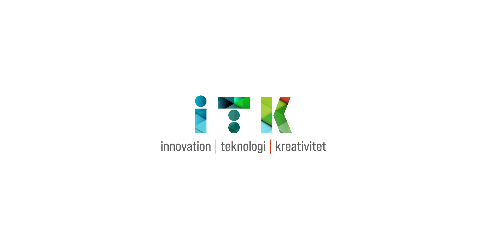
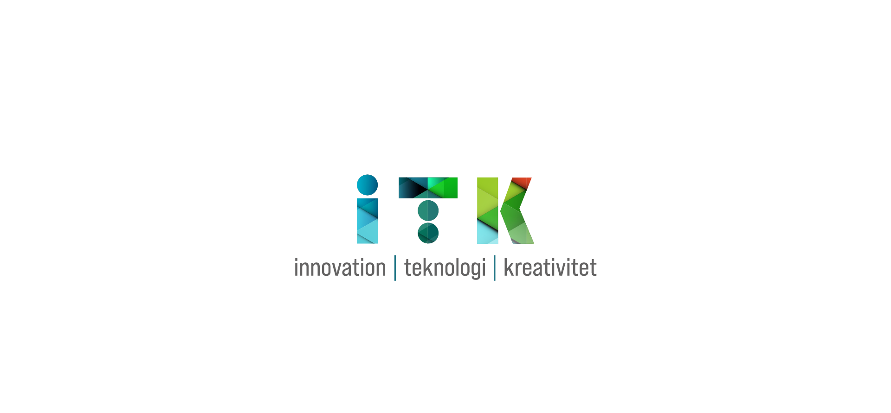
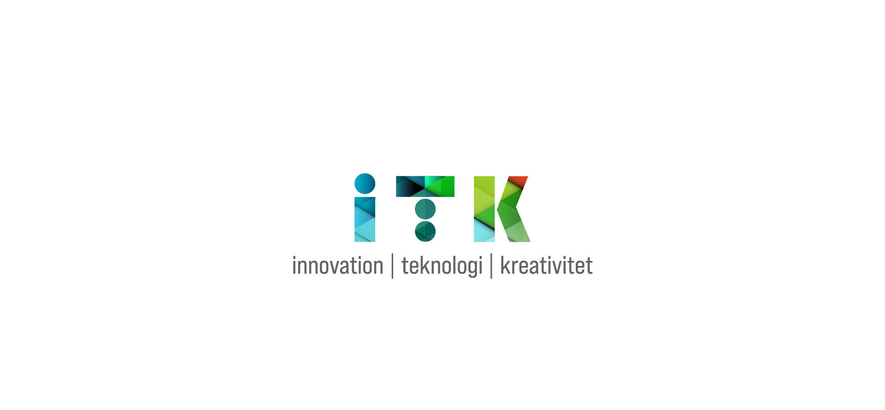
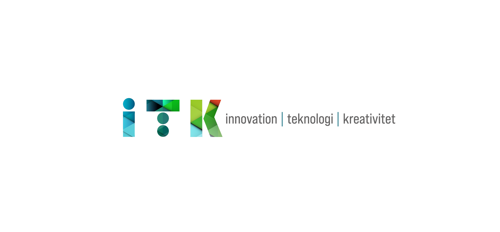
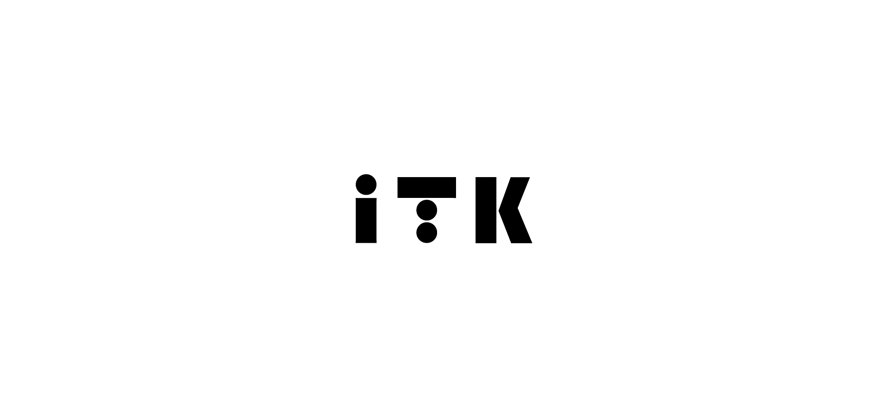
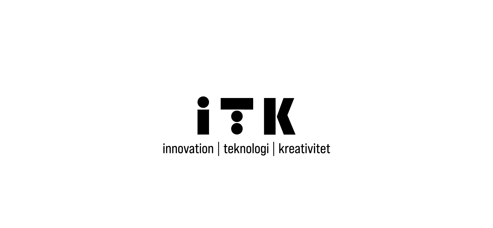
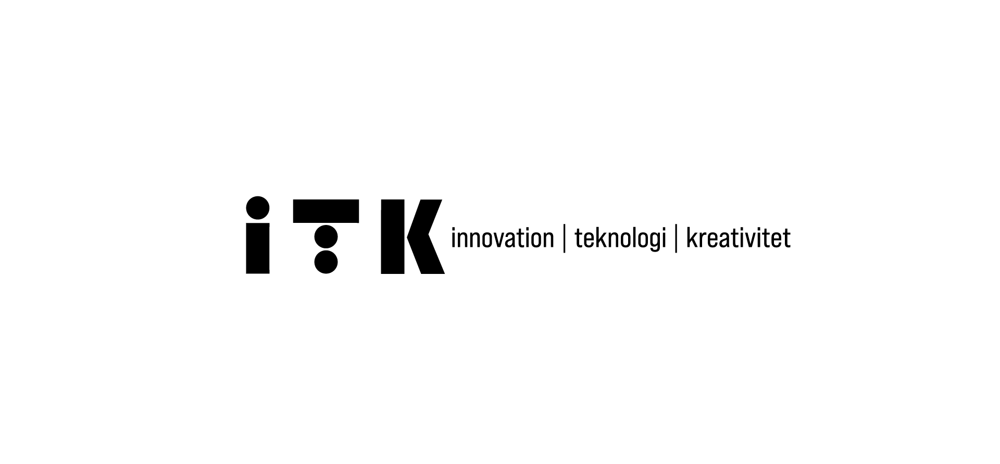
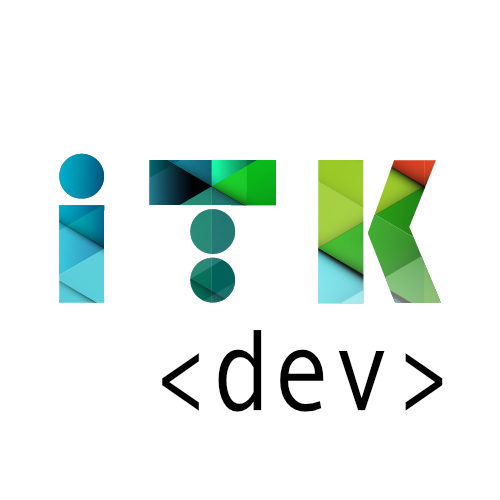
Minimum clear space equals 25 % of the mark's height on every side. Minimum print size: 18 mm wide. Minimum screen size: 56 px wide.